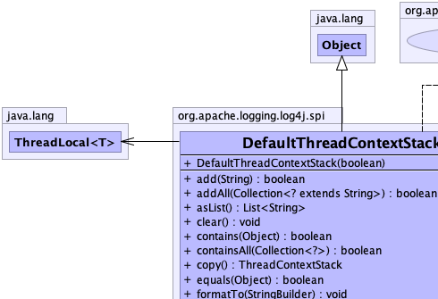
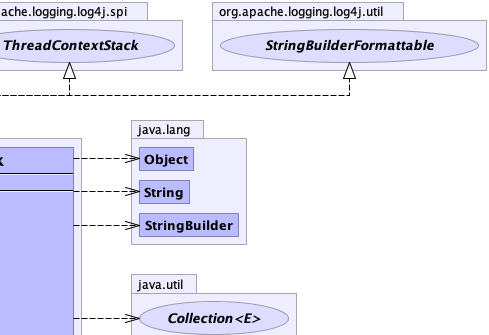
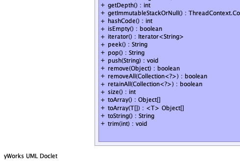
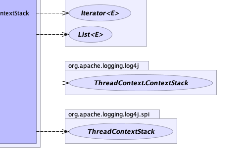

public class DefaultThreadContextStack extends java.lang.Object implements ThreadContextStack, StringBuilderFormattable
org.apache.logging.log4j.spi.ThreadContextStack in which all mutative
operations (add, pop, and so on) are implemented by making a fresh copy of the underlying list.|  |  |
|  |  |
| Constructor and Description |
|---|
DefaultThreadContextStack(boolean useStack) |
| Modifier and Type | Method and Description |
|---|---|
boolean |
add(java.lang.String s) |
boolean |
addAll(java.util.Collection<? extends java.lang.String> strings) |
java.util.List<java.lang.String> |
asList()
Returns all the elements in the stack in a List.
|
void |
clear() |
boolean |
contains(java.lang.Object o) |
boolean |
containsAll(java.util.Collection<?> objects) |
ThreadContextStack |
copy()
Returns a copy of the ContextStack.
|
boolean |
equals(java.lang.Object obj) |
void |
formatTo(java.lang.StringBuilder buffer)
Writes a text representation of this object into the specified
StringBuilder, ideally without allocating
temporary objects. |
int |
getDepth()
Returns the number of elements in the stack.
|
ThreadContext.ContextStack |
getImmutableStackOrNull()
Returns a ContextStack with the same contents as this ContextStack or
null. |
int |
hashCode() |
boolean |
isEmpty() |
java.util.Iterator<java.lang.String> |
iterator() |
java.lang.String |
peek()
Returns the element at the top of the stack without removing it or null if the stack is empty.
|
java.lang.String |
pop()
Returns the element at the top of the stack.
|
void |
push(java.lang.String message)
Pushes an element onto the stack.
|
boolean |
remove(java.lang.Object o) |
boolean |
removeAll(java.util.Collection<?> objects) |
boolean |
retainAll(java.util.Collection<?> objects) |
int |
size() |
java.lang.Object[] |
toArray() |
<T> T[] |
toArray(T[] ts) |
java.lang.String |
toString() |
void |
trim(int depth)
Trims elements from the end of the stack.
|
public boolean add(java.lang.String s)
add in interface java.util.Collection<java.lang.String>public boolean addAll(java.util.Collection<? extends java.lang.String> strings)
addAll in interface java.util.Collection<java.lang.String>public java.util.List<java.lang.String> asList()
ThreadContext.ContextStackasList in interface ThreadContext.ContextStackpublic void clear()
clear in interface java.util.Collection<java.lang.String>public boolean contains(java.lang.Object o)
contains in interface java.util.Collection<java.lang.String>public boolean containsAll(java.util.Collection<?> objects)
containsAll in interface java.util.Collection<java.lang.String>public ThreadContextStack copy()
ThreadContext.ContextStackcopy in interface ThreadContext.ContextStackpublic boolean equals(java.lang.Object obj)
equals in interface java.util.Collection<java.lang.String>equals in class java.lang.Objectpublic int getDepth()
ThreadContext.ContextStackgetDepth in interface ThreadContext.ContextStackpublic int hashCode()
hashCode in interface java.util.Collection<java.lang.String>hashCode in class java.lang.Objectpublic boolean isEmpty()
isEmpty in interface java.util.Collection<java.lang.String>public java.util.Iterator<java.lang.String> iterator()
iterator in interface java.lang.Iterable<java.lang.String>iterator in interface java.util.Collection<java.lang.String>public java.lang.String peek()
ThreadContext.ContextStackpeek in interface ThreadContext.ContextStackpublic java.lang.String pop()
ThreadContext.ContextStackpop in interface ThreadContext.ContextStackpublic void push(java.lang.String message)
ThreadContext.ContextStackpush in interface ThreadContext.ContextStackmessage - The element to add.public boolean remove(java.lang.Object o)
remove in interface java.util.Collection<java.lang.String>public boolean removeAll(java.util.Collection<?> objects)
removeAll in interface java.util.Collection<java.lang.String>public boolean retainAll(java.util.Collection<?> objects)
retainAll in interface java.util.Collection<java.lang.String>public int size()
size in interface java.util.Collection<java.lang.String>public java.lang.Object[] toArray()
toArray in interface java.util.Collection<java.lang.String>public <T> T[] toArray(T[] ts)
toArray in interface java.util.Collection<java.lang.String>public java.lang.String toString()
toString in class java.lang.Objectpublic void formatTo(java.lang.StringBuilder buffer)
StringBuilderFormattableStringBuilder, ideally without allocating
temporary objects.formatTo in interface StringBuilderFormattablebuffer - the StringBuilder to write intopublic void trim(int depth)
ThreadContext.ContextStacktrim in interface ThreadContext.ContextStackdepth - The maximum number of items in the stack to keep.public ThreadContext.ContextStack getImmutableStackOrNull()
ThreadContext.ContextStacknull. Attempts to modify the
returned stack may or may not throw an exception, but will not affect the contents of this ContextStack.getImmutableStackOrNull in interface ThreadContext.ContextStacknull.